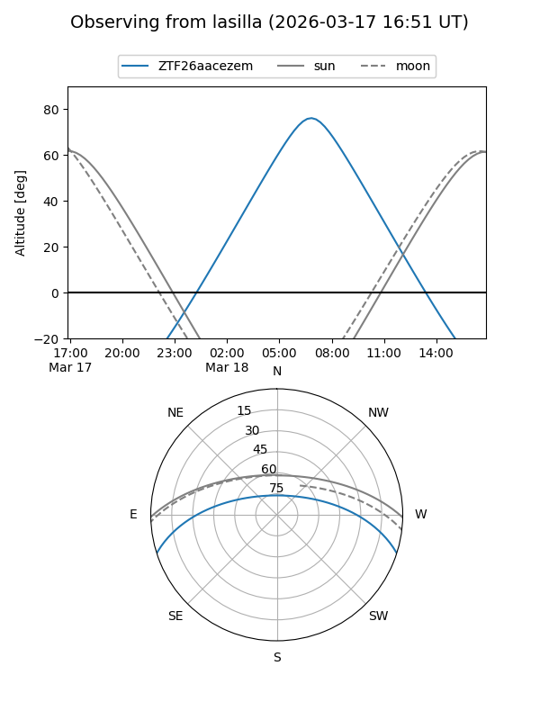
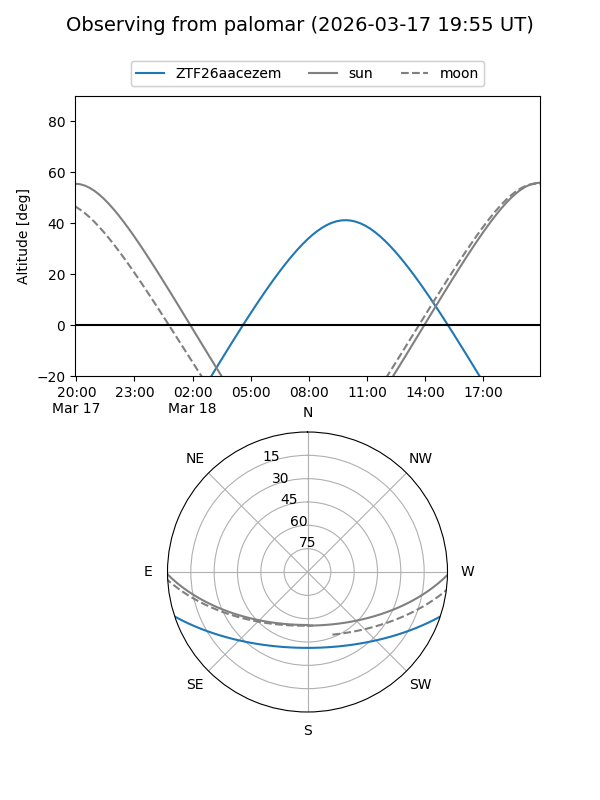

ZTF26aacezem
Target ZTF26aacezem at 2026-03-17 13:05
Aliases and brokers:
FINK: link
Lasair: link
ALeRCE: link
alt names
ZTF26aacezem (ztf,fink_ztf)
Coordinates:
equatorial (ra, dec) = 207.0913,-15.28947
equatorial (HMS+DMS) = 13:48:21.91,-15:17:22.10
galactic (l, b) = (322.6673,+45.38962)
Flags:
Photometry:
last ztfg=19.19
1 ztfg detections
Lightcurve
Visibility


Additional plots